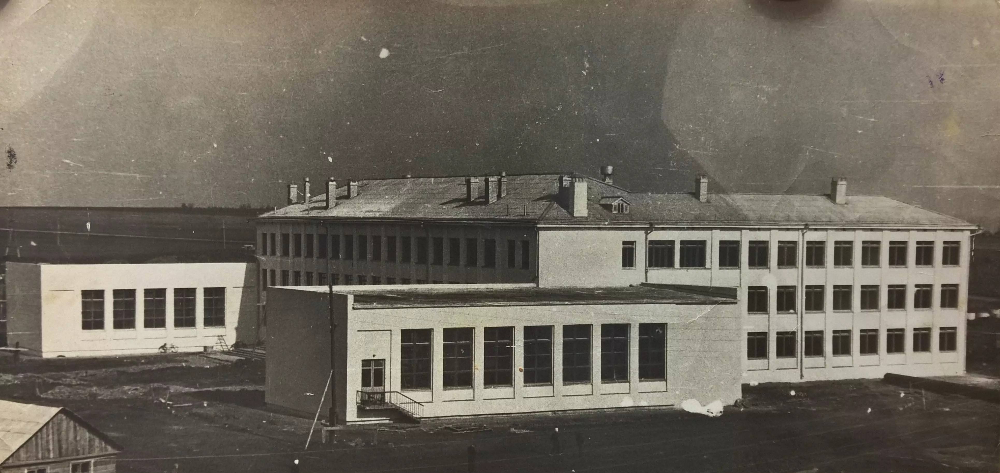

Как все начиналось
Строительство города началось со школы — это исторический факт, который определил лицо Нижнекамска.

Когда в конце 1950-х годов было принято решение о строительстве Нижнекамского нефтехимического комплекса, тысячи рабочих приехали в ещё пустое поле. Первые жилые дома — бараки и щитовые домики. Но первостроители мыслили не временными категориями. Они закладывали город, где будут жить семьи. Поэтому 1 сентября 1961 года в посёлке Строителей открылась первая школа... в двух приспособленных бараках, соединённых коридором. В ней было всего 220 мест.

Когда 22 сентября 1966 года рабочий посёлок официально стал городом Нижнекамском, здесь уже работали несколько школ, детские сады и профессиональный техникум. Весной 1966 года начал набор студентов Нижнекамский энергостроительный техникум (сегодня — Нижнекамский политехнический колледж имени Е.Н. Королёва). Он готовил кадры прямо для строящегося гиганта — Нижнекамскнефтехима.